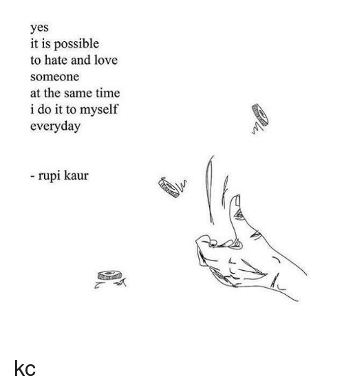
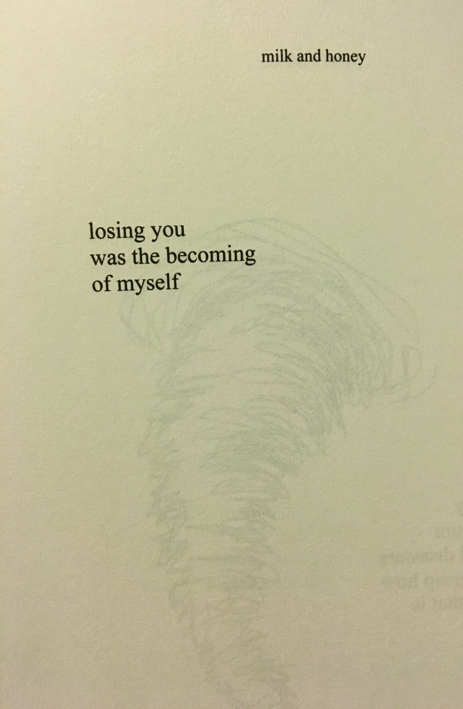

Milk and honey is a collection of poetry and prose about the experience of violence, abuse, love, loss, and feminity. The hurting is about the bad experiences she had in relationships and the pain she went through. The loving, which followed the hurting, was about the acceptance of the hurting. With all the pain that she had went through, she chose to give more chances and her heart.
The breaking is about the point where it all ended. It was literally her breaking point. She knew she was worth more than the way she was being treated. In the healing, it she showed how she not only forgave, but she moved on.
